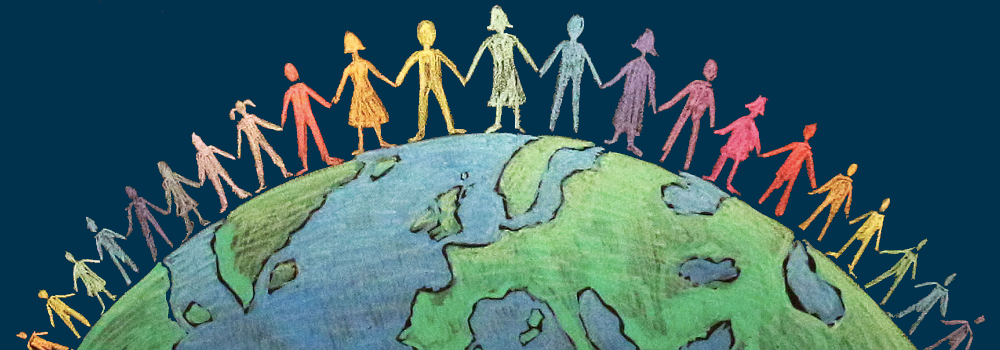

- Honesty is a necessary component of good citizenship because in life and in society, to be truthful builds
trust with others in your community allowing yourself to live peacefully among members of your society.
- Respect is also a component of good citizenship because not only should you respect yourself, but you should respect the other
members of your community.
- Responsibility is also a necessary component of good citizenship because people should always take responsibility for their
actions because often times this will led to respect from other members of your community, and will help build your relationship.
- While compassion is an important trait to have, it is not always a necessary component of good citizenship because many people are good citizens
and are valued members of society, despite the fact that they may lack compassion.
- Similar to compassion, courage is not a necessary component of good citizenship because while one wants to have courage, you are
not always benefiting society by demonstrating courage, thus it is not a necessary component of good citizenship.
A component that I believe is necessary for good citizenship is standing up for the rights of other people because often
times not everyone gets their voice heard, so making sure that the rights of those people is protected and fought for is a necessary component
of good citizenship. A recent act of powerful citizenship that I witnessed is the amount of cooperation and community that is being
formed in Houston after Hurricane Harvey. Everyone is coming together to try and rebuild what has been destroyed. The actions taken
by members of this community represent good citizenship because they are taking responsibility for damage done that directly affected themselves
but also for the damage done to others by stepping up, and aiding those in need.
Dictionary
My contract
